テクスチャ フィルターを使ったテクスチャ分割
テクスチャ分割は、それらのテクスチャをベースにした領域の識別です。目的は、テクスチャ フィルターを使ってイメージ内の 2 種類の繊維を区分することです。
目次
手順 1: イメージの読み込み
bag.png を読み込みます。
I = imread('bag.png');
figure, imshow(I);
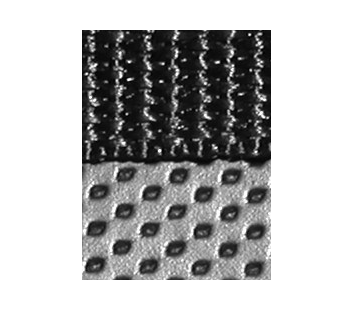 手順 2: テクスチャ イメージの作成
関数 entropyfilt を使用して、テクスチャ イメージを作成します。関数 entropyfilt は、配列を出力します。ここで、各出力ピクセルは、入力イメージ I 内の対応するピクセル周辺に 9x9 近傍のエントロピー値を含んでいます。エントロピーとは、ランダム性の統計的尺度です。
E = entropyfilt(I);
値が double イメージの既定の範囲内にあるように、関数 mat2gray を使用して、テクスチャ イメージ E を再スケーリングします。
Eim = mat2gray(E); imshow(Eim);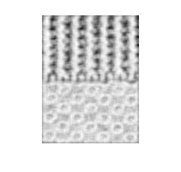
手順 3: 下部テクスチャでの粗いマスクの作成
再スケーリングされたイメージ Eim をしきい値処理し、テクスチャを分割します。テクスチャ間の境界線のピクセル強度値とほとんど同じであるため、しきい値 0.8 を選択します。
BW1 = im2bw(Eim, .8);
imshow(BW1); figure, imshow(I);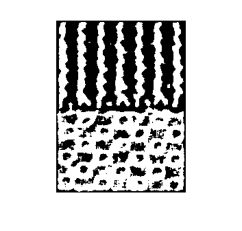
バイナリ イメージ BW1 の分割されたオブジェクトは白色です。BW1 と I を比較した場合、上部テクスチャは過度に分割され (複数の白色オブジェクト)、下部テクスチャはほとんど全体が分割されていることに気が付きます。関数 bwareaopen を使用して下部テクスチャを抽出できます。
BWao = bwareaopen(BW1,2000); imshow(BWao);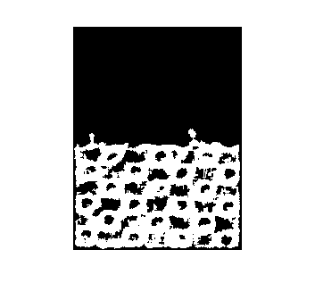
関数 imclose を使用して、エッジを滑らかにし、BWao のオブジェクトで開いている穴を閉じます。9x9 近傍を選択します。これは entropyfilt によっても使用されたためです。
nhood = true(9); closeBWao = imclose(BWao,nhood); imshow(closeBWao)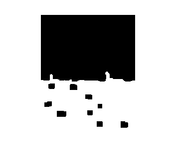
関数 imfill を使用して、closeBWao のオブジェクトの穴を塗りつぶします。
roughMask = imfill(closeBWao,'holes');
手順 4: 粗いマスクを使用した上部テクスチャの分割
バイナリ イメージ roughMask とオリジナル イメージ I を比較します。マスクはイメージの最下部まで拡張されていないため、下部テクスチャのマスクは完ぺきではないことに注意してください。ただし、関数 roughMask を使用して、上部テクスチャを分割できます。
imshow(roughMask); figure, imshow(I);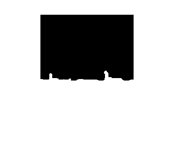
関数 roughMask を使用して上部テクスチャの生イメージを取得します。
I2 = I; I2(roughMask) = 0; imshow(I2);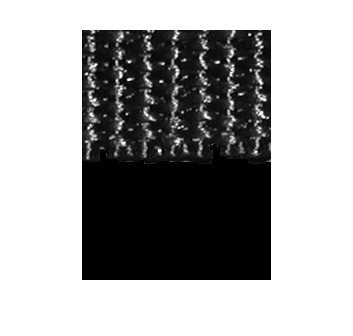
関数 entropyfilt を使用して、テクスチャ イメージを計算します。
E2 = entropyfilt(I2); E2im = mat2gray(E2); imshow(E2im);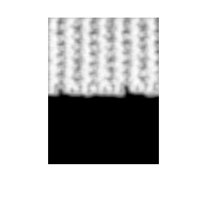
関数 graythresh を使用して、 E2im をしきい値処理します。
BW2 = im2bw(E2im,graythresh(E2im));
imshow(BW2) figure, imshow(I);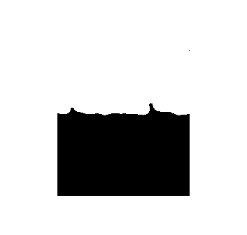
BW2 と I を比較すると、BW2 には分割されたオブジェクトが 2 つあることに気が付きます。関数 bwareaopen を使用して、上部テクスチャにマスクを取得します。
mask2 = bwareaopen(BW2,1000); imshow(mask2);

手順 5: 分割結果の表示
mask2 を使用して、I から上部および下部テクスチャを抽出します。
texture1 = I; texture1(~mask2) = 0; texture2 = I; texture2(mask2) = 0;
imshow(texture1); figure, imshow(texture2);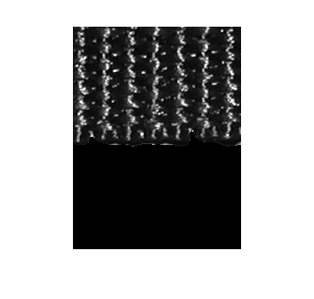 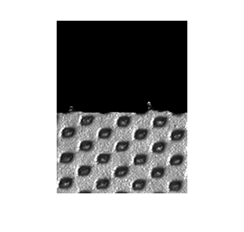
2 つのテクスチャ間の境界線の輪郭を表示します。
boundary = bwperim(mask2); segmentResults = I; segmentResults(boundary) = 255; imshow(segmentResults);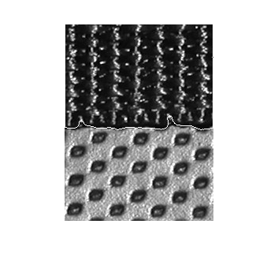
分割での他のテクスチャ フィルターの使用
関数 entropyfilt の代わりに、関数 stdfilt および rangefilt を他の形態学的関数と併用しても、同じような分割結果に達することができます。
S = stdfilt(I,nhood); imshow(mat2gray(S));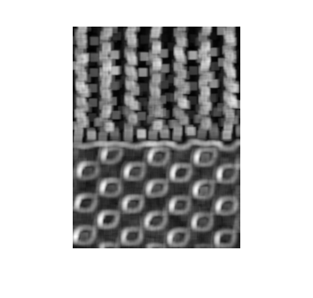
R = rangefilt(I,ones(5)); imshow(R);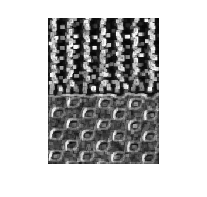